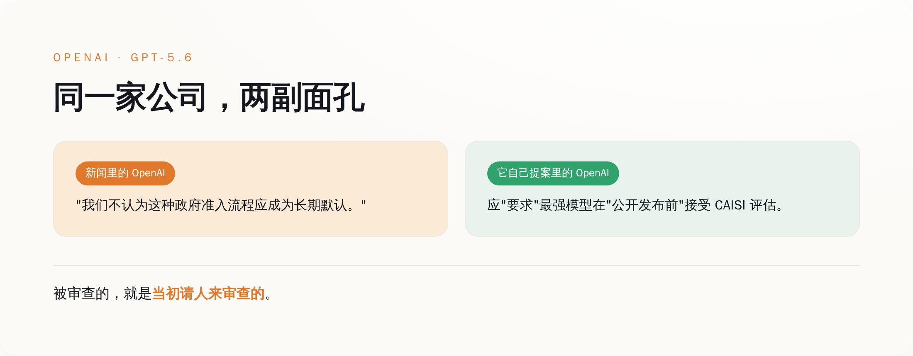
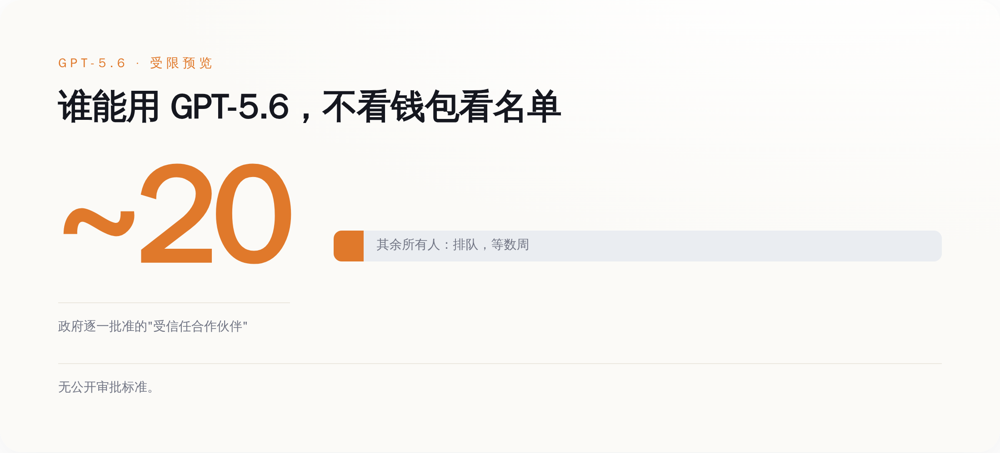
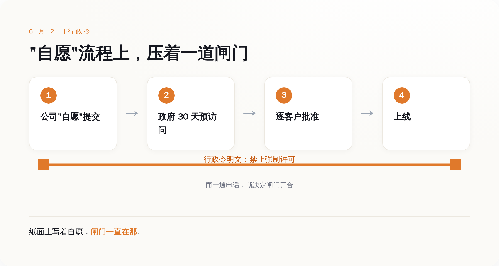
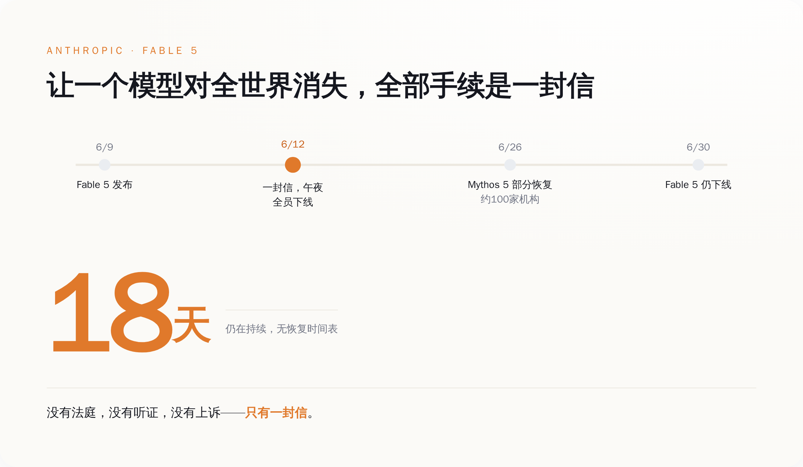

"受限预览"那天，OpenAI 到底说了什么
先把它委屈的那一面说完整，不然不公平。
6 月 26 日，GPT-5.6 发布，三档模型，代号 Sol、Terra、Luna。但这不是一次正常发布。它是"受限预览"——访问权限被锁死在大约二十家机构手里，而且这二十家不是 OpenAI 自己挑的，是政府一家一家批的。Sam Altman 跟员工说得很直白：商业访问权，政府"一个客户一个客户地"（customer by customer）批，目前没有任何公开的审批标准。
没有公开标准，是这句话里最值钱的四个字。意思是没人知道凭什么你能用、凭什么他不能用，全看那张看不见的名单。
OpenAI 在声明里把这次定性成"短期步骤"（short-term step），说接下来几周会放开给更广的人群，还说正在和政府一起设计一套"可重复使用的、未来模型发布的流程"（a repeatable process for future model releases）。这后半句，记住，待会儿要回来算账。
声明里最硬的一句是这个：
"它把最好的工具，挡在了那些真正需要它的用户、开发者、企业、网络安全防御者和全球合作伙伴之外。"
（It keeps the best tools from users, developers, enterprises, cyber defenders, and global partners who need them.）
翻过来就是一句话：好东西做出来了，可惜被拦着，不能给你们用，我们也很无奈。
到这里为止，剧本是完整的。一家想把最强 AI 普惠给所有人的公司，撞上了一堵叫"国家安全"的墙，它在墙这边喊话，听着挺惨。
我本来也准备同情它一下。

然后我翻出了它自己写的东西
OpenAI 有一份政策文件，标题叫《前沿 AI 的民主治理：一份联邦框架蓝图》（Democratic Governance of Frontier AI: A blueprint for a federal framework）。
这份文件不是别人塞给它的，是它主动写出来递给华盛顿的，核心就一句：
"政策制定者应当要求，能力最强的前沿模型，在公开发布前接受一次 CAISI 评估。"
（Policymakers should require the most capable frontier models to undergo a CAISI evaluation before public release.）
CAISI 是商务部底下专门给 AI 定标准、做评估的机构，前身就是那个"AI 安全研究所"，去年才改的名。这句话里有两个词得拆开看。一个是 require——要求，不是建议，不是鼓励，是带强制意味的"应当要求"。另一个是 before public release——发布之前。
把这两个词拼起来，就是：最强的模型，发布前，政府必须先过一遍手。
这正是 GPT-5.6 现在经历的事。区别只在于，现实给的剂量比 OpenAI 点的菜还重了一点——不光要评估，还顺手加了个"逐客户审批"的浇头。
Altman 本人怎么看这份文件？他公开说："对这份文件很满意，尤其是它强调了要强化、要把 CAISI 放到中心位置。"（Am happy with this document, and in particular the emphasis on strengthening and centering CAISI.）他还给那道 6 月 2 日的行政令背了书，原话是："这道新行政令，把平衡拿捏对了。"（the new EO gets the balance right.）
所以现在你再回头看导语里那句委屈话。
一家亲手提案"请审查最强模型"、亲口给审查框架点过赞、还说政府"平衡拿捏对了"的公司，在政府真照着做之后，发声明说"这不该成为长期默认"。
这不叫被审查。这叫请客吃饭，客人真来了，主人嫌上菜慢。
"自愿"两个字，是怎么变成"必须"的
有人会替 OpenAI 辩护：它支持的是"评估"，反对的是"审批否决"，这两件事不一样。
这个辩护有道理，我们得认真对待。OpenAI 的立场确实是：政府可以评估，但不该握有"批不批准你部署"的否决权。问题在于，这次它实际吃下去的，恰好就是它说自己反对的那种。逐客户审批，政府一家一家批，能批就能不批，不批就是否决——这跟它嘴上反对的"否决权"，是同一只手。它一边把这只手请进了门，一边声明自己反对这只手。
而真正让"自愿"两个字变味的，是那道行政令本身。
6 月 2 日，行政令签了，名字叫《促进先进人工智能的创新与安全》。这份文件特意在第 3 节里写明：本节内容不授权设立任何强制性的政府许可、预先批准或许可证制度。（nothing in Section 3 authorizes the creation of a mandatory governmental licensing, preclearance, or permitting requirement.）
写得清清楚楚——这是自愿的，没人逼你。开发者可以"自愿"把模型交上去评估，政府拿到后有最长 30 天的预先访问期（这个窗口草案里原本是 90 天，业界嫌长，砍到了 30——这扇门开多久，业界自己也是伸过手的）。
"自愿"两个字，是整套机制的遮羞布。
因为只要它是自愿的，那政府就不算在审查，公司也不算被审查，大家面子上都过得去，也绕开了一个麻烦事——真要白纸黑字搞强制许可，一道行政令是立不起来的，所以它自己在第 3 节里抢先把"强制"两个字撇得干干净净。
可问题是，当那个握着审批权的政府，同时还是你最大的潜在客户、是能动用出口管制把你刑事处罚的那一方时，"自愿"这两个字还剩多少分量？
你想知道答案，不用看 OpenAI。看它隔壁就行。

想看"自愿"到底自不自愿，看隔壁 Anthropic
OpenAI 这次还算体面，叫"受限预览"，发布即受限，没经历过把模型公开放出去再被摁回来的难堪。
Anthropic 经历了。
6 月 9 日，Anthropic 发布了它当时最强的模型 Claude Fable 5。三天后，6 月 12 日下午，商务部长 Howard Lutnick 给 CEO Dario Amodei 寄了一封信。当天午夜前，Fable 5 和另一个模型 Mythos 5，对全体用户下线。
Anthropic 自己的声明是这么写的，一个字都没绕：
"美国政府以国家安全为由，发布了一道出口管制指令，要求暂停任何外国籍人士访问 Fable 5 和 Mythos 5——无论其身在美国境内还是境外，包括 Anthropic 自己的外籍员工。这道命令的净效果是：为了合规，我们必须立刻对所有客户停用 Fable 5 和 Mythos 5。"
念一遍这句话的逻辑链。政府要的是"别让外国人用"。Anthropic 做不到只拦外国人——因为一个全球实时调用的 AI 产品，没法在你敲下回车那一刻精准识别你的国籍。所以它唯一能做到的合规，就是把所有人一起拦掉。要拦一个外国实习生，先得让全世界的付费客户一起断网。
这就是出口管制这把老工具的尴尬。它当年是为"芯片"这种看得见、摸得着、能卡在海关的东西设计的。现在你拿它去管一个长在云端、按 token 吐字的生成式模型，它只有一个动作能做：一刀切。
Anthropic 在声明结尾还留了句话："我们为给客户造成的中断致歉。我们相信这是一场误会，正在尽快恢复访问。"
误会归误会。这封信里 Lutnick 威胁的是刑事和民事处罚，不是请你喝咖啡。而所谓"尽快恢复"，到我写这篇文章的 6 月 30 日，Fable 5 已经全球下线 18 天，还没回来。中间只有 Mythos 5 在 6 月 26 日"部分恢复"——政府又寄了封信，说经过认定，"适当的安保措施已经到位，可以允许某些受信任的合作伙伴访问 Mythos 5 模型"，名单上大约一百家美国机构，可以让它们的非美籍员工用了。
看明白这套流程没有。政府一句话，模型消失；政府再一句话，模型对名单上的一百家回来；名单外的，继续等。从头到尾，没有一个法庭、没有一次听证、没有一条能上诉的渠道。靠的就是部长的信和给 Altman 的那通电话。

所以别急着同情谁
一封信，一通电话。这就是 2026 年让一个最强 AI 模型上线或下线，需要的全部手续。把两家放一起看，事情就清楚了。
得说清楚，这是两扇门：Anthropic 撞的那扇叫出口管制，OpenAI 走的那扇叫"自愿"评估框架，法律依据完全不同。但两扇门朝同一个方向开——最强的模型，发布或访问之前，先过政府这一关。
Anthropic 是被门夹了手——出口管制、刑事处罚、18 天黑屏，这是有人把门狠狠摔上。OpenAI 是自己把门请进了屋，又在门口喊疼——它提案要这道关，给这道关点过赞，然后在关卡真的立起来那天，发声明说它不该常驻。
两件事拼起来，指向同一个事实：发布前要过政府这一关，已经从传闻变成了现实，两家最顶尖的美国实验室在两周内先后撞上。而把这扇门一砖一瓦递上去的人里，就有现在喊得最委屈的那个。
这事的行动含义其实特别朴素，跟 AI 没关系，跟看新闻的方法有关系：
下一次，再看到哪家 AI 公司站出来，一脸悲壮地说"我们被监管误伤了"，你先别急着递同情。打开它官网那个叫 policy 或者 global affairs 的栏目，翻翻它过去一年自己提过什么、给哪道法案点过赞，两分钟的事。翻完再决定，这眼泪你信几分。
OpenAI 那份蓝图的名字，叫《前沿 AI 的民主治理》。
它求的从来不是别让政府管，它求的是政府按它设计的方式管。现在政府接过了笔，只是写出来的字，比它预想的重了一号。委屈是真的。但这扇门是谁递的，也是真的。